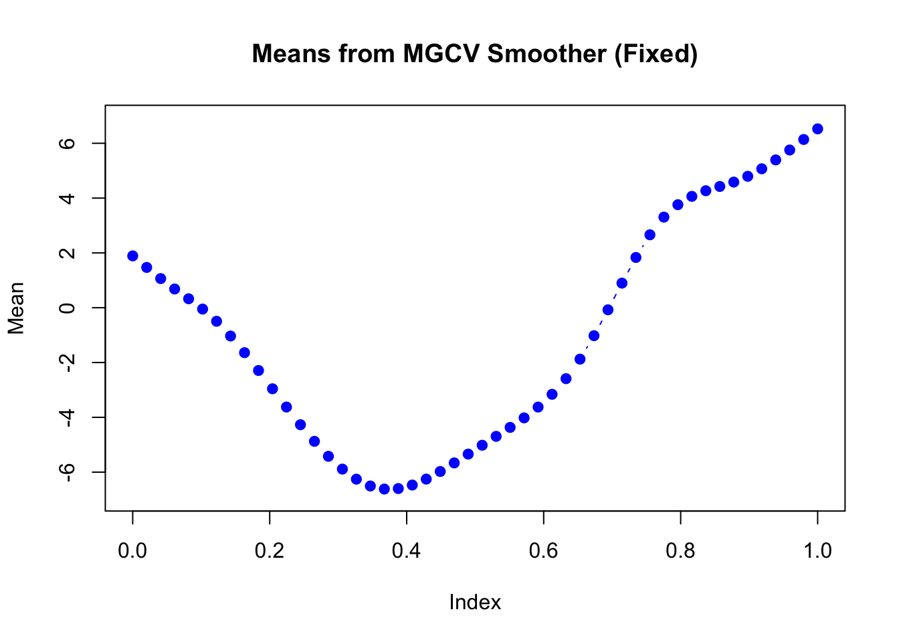

Last updated: 2025-07-15
Checks: 7 0
Knit directory: InferOrder/
This reproducible R Markdown analysis was created with workflowr (version 1.7.1). The Checks tab describes the reproducibility checks that were applied when the results were created. The Past versions tab lists the development history.
Great! Since the R Markdown file has been committed to the Git repository, you know the exact version of the code that produced these results.
Great job! The global environment was empty. Objects defined in the global environment can affect the analysis in your R Markdown file in unknown ways. For reproduciblity it’s best to always run the code in an empty environment.
The command set.seed(20250707) was run prior to running
the code in the R Markdown file. Setting a seed ensures that any results
that rely on randomness, e.g. subsampling or permutations, are
reproducible.
Great job! Recording the operating system, R version, and package versions is critical for reproducibility.
Nice! There were no cached chunks for this analysis, so you can be confident that you successfully produced the results during this run.
Great job! Using relative paths to the files within your workflowr project makes it easier to run your code on other machines.
Great! You are using Git for version control. Tracking code development and connecting the code version to the results is critical for reproducibility.
The results in this page were generated with repository version d9bed11. See the Past versions tab to see a history of the changes made to the R Markdown and HTML files.
Note that you need to be careful to ensure that all relevant files for
the analysis have been committed to Git prior to generating the results
(you can use wflow_publish or
wflow_git_commit). workflowr only checks the R Markdown
file, but you know if there are other scripts or data files that it
depends on. Below is the status of the Git repository when the results
were generated:
Ignored files:
Ignored: .DS_Store
Ignored: .Rhistory
Ignored: .Rproj.user/
Ignored: analysis/.DS_Store
Untracked files:
Untracked: Smooth_EB.png
Untracked: Smooth_fixed.png
Untracked: code/smoother_experiment.R
Untracked: code/stochasticEM.R
Unstaged changes:
Deleted: all_celltypes_umap.png
Note that any generated files, e.g. HTML, png, CSS, etc., are not included in this status report because it is ok for generated content to have uncommitted changes.
These are the previous versions of the repository in which changes were
made to the R Markdown (analysis/explore_smoothSEM.rmd) and
HTML (docs/explore_smoothSEM.html) files. If you’ve
configured a remote Git repository (see ?wflow_git_remote),
click on the hyperlinks in the table below to view the files as they
were in that past version.
| File | Version | Author | Date | Message |
|---|---|---|---|---|
| Rmd | d9bed11 | Ziang Zhang | 2025-07-15 | workflowr::wflow_publish("analysis/explore_smoothSEM.rmd") |
As in the previous study, we consider a mixture model with \(K\) components:
\[ \boldsymbol{X}_i \mid z_i = k \sim \mathcal{N}(\boldsymbol{\mu}_k, \boldsymbol{\Sigma}_k), \quad i = 1, \ldots, n. \]
We assume that the sequence of component means \(\{\boldsymbol{\mu}_1, \ldots, \boldsymbol{\mu}_K\}\) corresponds to evaluations of an underlying smooth function:
\[ \boldsymbol{\mu}_k = u\Bigl(\frac{k}{K}\Bigr), \quad k = 1, \ldots, K, \]
where \(u : [0,1] \to \mathbb{R}^d\) is an unknown smooth function. This formulation does not impose a specific probabilistic prior on \(u\), but instead assumes that \(\{\boldsymbol{\mu}_k\}\) vary smoothly across \(k\).
Our Smooth Threshold EM approach modifies the standard EM procedure as follows:
\[ \gamma_{ik}^{(t)} = \frac{\pi_k^{(t)} \, \mathcal{N}\bigl(\boldsymbol{X}_i \mid \boldsymbol{\mu}_k^{(t)}, \boldsymbol{\Sigma}_k^{(t)}\bigr)}{\sum_{j=1}^K \pi_j^{(t)} \, \mathcal{N}\bigl(\boldsymbol{X}_i \mid \boldsymbol{\mu}_j^{(t)}, \boldsymbol{\Sigma}_j^{(t)}\bigr)}. \]
Hard assignment (deterministic):
\[ z_i^{(t)} = \arg\max_k \gamma_{ik}^{(t)}. \]
Optional stochastic assignment:
\[ z_i^{(t)} \sim \text{Categorical}\bigl(\gamma_{i1}^{(t)}, \ldots, \gamma_{iK}^{(t)}\bigr). \]
Given the assignments \(\{(z_i^{(t)}, \boldsymbol{X}_i)\}\), we fit a smoother that directly estimates the sequence of cluster means:
\[ \bigl(\boldsymbol{\mu}_1^{(t+1)}, \ldots, \boldsymbol{\mu}_K^{(t+1)}\bigr) \leftarrow \text{Smooth}\bigl(\{(z_i^{(t)}, \boldsymbol{X}_i)\}\bigr). \]
The smoother can be any technique enforcing the desired level of smoothness across component indices.
The cluster covariances are updated as:
\[ \boldsymbol{\Sigma}_k^{(t+1)} = \frac{1}{n_k^{(t)}} \sum_{i: z_i^{(t)} = k} \bigl(\boldsymbol{X}_i - \boldsymbol{\mu}_k^{(t+1)}\bigr)\bigl(\boldsymbol{X}_i - \boldsymbol{\mu}_k^{(t+1)}\bigr)^\top. \]
Here, we will simulate a mixture of Gaussians in 2D, for \(n = 500\) observations and \(K = 20\) components.
set.seed(123)
source("./code/simulate.R")
source("./code/stochasticEM.R")
library(Matrix)
library(matrixStats)Warning: package 'matrixStats' was built under R version 4.3.3library(MASS)
library(mvtnorm)Warning: package 'mvtnorm' was built under R version 4.3.3palette_colors <- rainbow(20)
alpha_colors <- sapply(palette_colors, function(clr) adjustcolor(clr, alpha.f=0.3))
sim <- simulate_mixture(n=500, K = 20, d=2, seed=123, proj_mat = matrix(c(1,-0.6,-0.6,1), nrow = 2, byrow = T))plot(sim$X, col = alpha_colors[sim$z],
pch = 19, cex = 0.5,
xlab = "X1", ylab = "X2",
main = "Simulated mixture of Gaussians in 2D")Now, let’s assume we don’t know there are 20 components, and we will fit a mixture model with \(K = 50\) components to this data. For simplicity, let’s assume \(\mathbf{\Sigma}_k = \mathbf{\Sigma}\) for all \(k\), where \(\mathbf{\Sigma}\) is a diagonal matrix.
We first consider the penalized B-spline smoother implemented through
the package mgcv. This smoother uses a penalty term to
enforce smoothness across the estimated means.
Let’s write a function to generate such smoother:
smoother_mgcv_generator <- function(K, pi = NULL, bs = "bs", num_basis = 30, locations = NULL, m = 2, sp = NULL, method = "ML") {
if (is.null(locations)) {
locations <- seq(0, 1, length.out = K)
}
if (is.null(pi)) {
pi <- rep(1/K, K)
} else if (length(pi) != K) {
stop("pi must be a vector of length K")
}
smoother <- function(Z, X, params = NULL) {
z_idx <- apply(Z, 1, which.max)
t <- locations[z_idx]
d <- ncol(X)
U <- matrix(0, nrow = K, ncol = d)
sigma <- numeric(d)
for (i in 1:d) {
df_current <- data.frame(x = X[, i], t = t)
mod <- mgcv::gam(x ~ s(t, bs = bs, k = num_basis, m = m, sp = sp),
method = method,
family = gaussian(),
data = df_current)
# mgcv::predict.gam returns a vector
U[, i] <- predict(mod, newdata = data.frame(t = locations))
sigma[i] <- var(mod$residuals)
}
list(pi = pi, mu = split(U, row(U)), sigma = sigma)
}
return(smoother)
}Applying the smoother (with a fixed level of smoothness penalty) in the M-step to our simulated data:
smoother_mgcv <- smoother_mgcv_generator(K = 50, bs = "bs",
num_basis = 20, m = c(3,2),
sp = 100)
set.seed(123)
init_params <- make_default_init(sim$X, K=50)
result_mgcv <- stochastic_EM(
X = sim$X,
init_params = init_params,
threshold = "hard",
smoother = smoother_mgcv,
max_iter = 100,
tol = 1e-5,
verbose = TRUE
)Warning in smooth.construct.bs.smooth.spec(object, dk$data, dk$knots): basis
dimension is larger than number of unique covariates
Warning in smooth.construct.bs.smooth.spec(object, dk$data, dk$knots): basis
dimension is larger than number of unique covariatesIteration 1 (initialization)
Iteration 2:
relΔU = 1.183220e+00
relΔSigma = 7.358657e-01
relΔGamma = 9.679182e-01
Iteration 3:
relΔU = 2.192901e-01
relΔSigma = 5.289045e-01
relΔGamma = 1.135869e+00
Iteration 4:
relΔU = 1.339744e-01
relΔSigma = 2.197193e-01
relΔGamma = 6.204105e-01
Iteration 5:
relΔU = 9.890663e-02
relΔSigma = 1.915638e-01
relΔGamma = 3.838961e-01
Iteration 6:
relΔU = 6.595388e-02
relΔSigma = 1.562570e-01
relΔGamma = 3.482616e-01
Iteration 7:
relΔU = 5.100825e-02
relΔSigma = 9.419623e-02
relΔGamma = 2.871593e-01
Iteration 8:
relΔU = 4.177309e-02
relΔSigma = 7.120505e-02
relΔGamma = 2.487183e-01
Iteration 9:
relΔU = 4.257584e-02
relΔSigma = 7.574855e-02
relΔGamma = 2.226644e-01
Iteration 10:
relΔU = 2.985455e-02
relΔSigma = 3.759246e-02
relΔGamma = 2.316885e-01
Iteration 11:
relΔU = 2.985916e-02
relΔSigma = 3.147648e-02
relΔGamma = 1.803975e-01
Iteration 12:
relΔU = 2.694174e-02
relΔSigma = 3.075809e-02
relΔGamma = 1.840151e-01
Iteration 13:
relΔU = 2.368060e-02
relΔSigma = 3.862209e-02
relΔGamma = 1.734926e-01
Iteration 14:
relΔU = 1.979606e-02
relΔSigma = 3.954792e-02
relΔGamma = 1.575292e-01
Iteration 15:
relΔU = 1.916345e-02
relΔSigma = 2.113260e-02
relΔGamma = 1.424851e-01
Iteration 16:
relΔU = 1.831534e-02
relΔSigma = 4.344799e-02
relΔGamma = 1.375305e-01
Iteration 17:
relΔU = 1.815695e-02
relΔSigma = 4.936822e-02
relΔGamma = 1.428554e-01
Iteration 18:
relΔU = 1.662043e-02
relΔSigma = 7.236334e-02
relΔGamma = 1.453502e-01
Iteration 19:
relΔU = 1.446701e-02
relΔSigma = 8.602045e-02
relΔGamma = 1.408367e-01
Iteration 20:
relΔU = 1.586729e-02
relΔSigma = 1.022498e-01
relΔGamma = 1.383092e-01
Iteration 21:
relΔU = 1.796540e-02
relΔSigma = 1.050712e-01
relΔGamma = 1.572451e-01
Iteration 22:
relΔU = 2.129529e-02
relΔSigma = 1.517928e-01
relΔGamma = 1.809439e-01
Iteration 23:
relΔU = 3.704875e-02
relΔSigma = 9.025651e-02
relΔGamma = 2.381033e-01
Iteration 24:
relΔU = 1.867614e-02
relΔSigma = 3.766447e-02
relΔGamma = 3.079331e-01
Iteration 25:
relΔU = 1.555028e-02
relΔSigma = 1.885227e-02
relΔGamma = 2.111723e-01
Iteration 26:
relΔU = 1.517953e-02
relΔSigma = 3.279566e-02
relΔGamma = 2.042569e-01
Iteration 27:
relΔU = 1.848291e-02
relΔSigma = 3.600861e-02
relΔGamma = 2.017631e-01
Iteration 28:
relΔU = 1.774300e-02
relΔSigma = 4.099660e-02
relΔGamma = 2.189802e-01
Iteration 29:
relΔU = 1.027746e-02
relΔSigma = 1.193345e-02
relΔGamma = 2.030787e-01
Iteration 30:
relΔU = 1.185255e-02
relΔSigma = 4.338463e-03
relΔGamma = 1.402380e-01
Iteration 31:
relΔU = 1.052690e-02
relΔSigma = 6.251619e-03
relΔGamma = 1.386801e-01
Iteration 32:
relΔU = 9.163139e-03
relΔSigma = 1.142382e-02
relΔGamma = 1.186152e-01
Iteration 33:
relΔU = 6.977837e-03
relΔSigma = 3.410998e-04
relΔGamma = 1.226224e-01
Iteration 34:
relΔU = 9.168412e-03
relΔSigma = 6.764842e-03
relΔGamma = 9.466590e-02
Iteration 35:
relΔU = 7.959482e-03
relΔSigma = 6.030971e-03
relΔGamma = 1.090649e-01
Iteration 36:
relΔU = 4.745328e-03
relΔSigma = 1.389693e-03
relΔGamma = 7.962275e-02
Iteration 37:
relΔU = 5.445506e-03
relΔSigma = 4.887827e-03
relΔGamma = 3.969775e-02
Iteration 38:
relΔU = 8.701325e-03
relΔSigma = 5.465738e-03
relΔGamma = 4.402158e-02
Iteration 39:
relΔU = 3.620258e-03
relΔSigma = 3.805160e-03
relΔGamma = 6.051306e-02
Iteration 40:
relΔU = 4.416102e-03
relΔSigma = 2.511656e-03
relΔGamma = 5.792962e-02
Iteration 41:
relΔU = 6.176041e-03
relΔSigma = 1.404402e-04
relΔGamma = 6.644673e-02
Iteration 42:
relΔU = 5.423766e-03
relΔSigma = 6.004494e-03
relΔGamma = 7.646657e-02
Iteration 43:
relΔU = 4.951290e-03
relΔSigma = 8.819709e-03
relΔGamma = 8.487834e-02
Iteration 44:
relΔU = 4.777191e-03
relΔSigma = 1.100042e-02
relΔGamma = 6.139040e-02
Iteration 45:
relΔU = 4.760495e-03
relΔSigma = 5.070052e-04
relΔGamma = 6.652292e-02
Iteration 46:
relΔU = 3.164905e-03
relΔSigma = 8.022960e-04
relΔGamma = 5.834619e-02
Iteration 47:
relΔU = 1.363249e-03
relΔSigma = 2.602167e-03
relΔGamma = 4.658138e-02
Iteration 48:
relΔU = 1.223237e-03
relΔSigma = 2.485901e-03
relΔGamma = 2.816954e-02
Iteration 49:
relΔU = 5.813147e-04
relΔSigma = 2.142353e-04
relΔGamma = 2.920946e-02
Iteration 50:
relΔU = 6.828939e-04
relΔSigma = 2.159854e-05
relΔGamma = 1.242802e-02
Iteration 51:
relΔU = 9.459284e-04
relΔSigma = 3.955822e-04
relΔGamma = 1.814146e-02
Iteration 52:
relΔU = 0.000000e+00
relΔSigma = 0.000000e+00
relΔGamma = 1.848741e-02
Iteration 53:
relΔU = 0.000000e+00
relΔSigma = 0.000000e+00
relΔGamma = 0.000000e+00
Converged.plot(sim$X, col=alpha_colors[sim$z], cex=1,
xlab="X1", ylab="X2",
pch=19, main="EM Fitted Means with MGCV Smoothing (Fixed)")
mu_matrix <- do.call(rbind, result_mgcv$params$mu)
for (k in 1:(nrow(mu_matrix)-1)) {
if (sqrt(sum((mu_matrix[k+1,] - mu_matrix[k,])^2)) > 1e-6) {
arrows(mu_matrix[k,1], mu_matrix[k,2],
mu_matrix[k+1,1], mu_matrix[k+1,2],
col="orange", lwd=2, length=0.1)
}
}
points(mu_matrix, pch=8, cex=1, lwd=1, col="orange")The estimated mean in each dimension:
plot(mu_matrix[,1] ~ seq(0,1, length.out = nrow(mu_matrix)),
type = "b", col = "blue", pch = 19,
xlab = "Index", ylab = "Mean",
main = "Means from MGCV Smoother (Fixed)",
ylim = range(mu_matrix))plot(mu_matrix[,2] ~ seq(0,1, length.out = nrow(mu_matrix)),
type = "b", col = "blue", pch = 19,
xlab = "Index", ylab = "Mean",
main = "Means from MGCV Smoother (Fixed)",
ylim = range(mu_matrix))
Applying the smoother (with EB adapted smoothness penalty) in the M-step to our simulated data:
smoother_mgcv <- smoother_mgcv_generator(K = 50, bs = "bs",
num_basis = 20, m = c(3,2),
sp = NULL, method = "ML")
set.seed(123)
init_params <- make_default_init(sim$X, K=50)
result_mgcv <- stochastic_EM(
X = sim$X,
init_params = init_params,
threshold = "hard",
smoother = smoother_mgcv,
max_iter = 100,
tol = 1e-5,
verbose = TRUE
)Warning in smooth.construct.bs.smooth.spec(object, dk$data, dk$knots): basis
dimension is larger than number of unique covariates
Warning in smooth.construct.bs.smooth.spec(object, dk$data, dk$knots): basis
dimension is larger than number of unique covariatesIteration 1 (initialization)
Iteration 2:
relΔU = 6.684361e-02
relΔSigma = 4.873505e-01
relΔGamma = 7.277495e-01
Iteration 3:
relΔU = 2.862220e-02
relΔSigma = 2.861013e-01
relΔGamma = 3.494936e-01
Iteration 4:
relΔU = 9.985312e-03
relΔSigma = 5.339118e-02
relΔGamma = 1.816420e-01
Iteration 5:
relΔU = 7.500035e-03
relΔSigma = 2.833092e-02
relΔGamma = 9.892933e-02
Iteration 6:
relΔU = 6.302947e-03
relΔSigma = 1.399816e-02
relΔGamma = 8.060649e-02
Iteration 7:
relΔU = 9.475010e-03
relΔSigma = 1.253006e-02
relΔGamma = 4.534402e-02
Iteration 8:
relΔU = 8.641219e-03
relΔSigma = 2.415722e-02
relΔGamma = 6.335558e-02
Iteration 9:
relΔU = 7.284369e-03
relΔSigma = 1.537775e-02
relΔGamma = 4.084748e-02
Iteration 10:
relΔU = 2.650234e-03
relΔSigma = 7.450274e-03
relΔGamma = 2.934321e-02
Iteration 11:
relΔU = 3.492960e-03
relΔSigma = 1.490281e-02
relΔGamma = 2.301410e-02
Iteration 12:
relΔU = 3.896702e-03
relΔSigma = 7.976918e-03
relΔGamma = 2.921189e-02
Iteration 13:
relΔU = 3.675120e-03
relΔSigma = 1.179966e-03
relΔGamma = 1.828996e-02
Iteration 14:
relΔU = 7.085302e-03
relΔSigma = 7.019274e-03
relΔGamma = 2.115482e-02
Iteration 15:
relΔU = 4.649088e-03
relΔSigma = 2.211740e-03
relΔGamma = 2.920791e-02
Iteration 16:
relΔU = 9.028368e-03
relΔSigma = 2.000472e-03
relΔGamma = 2.078615e-02
Iteration 17:
relΔU = 6.397165e-03
relΔSigma = 2.324601e-03
relΔGamma = 3.548781e-02
Iteration 18:
relΔU = 2.358001e-03
relΔSigma = 1.794774e-03
relΔGamma = 3.189209e-02
Iteration 19:
relΔU = 4.747310e-03
relΔSigma = 8.373788e-03
relΔGamma = 1.853817e-02
Iteration 20:
relΔU = 4.803193e-03
relΔSigma = 7.118830e-03
relΔGamma = 3.669495e-02
Iteration 21:
relΔU = 4.669608e-03
relΔSigma = 1.443668e-02
relΔGamma = 5.085044e-02
Iteration 22:
relΔU = 2.057923e-03
relΔSigma = 1.660992e-02
relΔGamma = 5.093011e-02
Iteration 23:
relΔU = 4.794940e-03
relΔSigma = 8.086061e-03
relΔGamma = 2.891246e-02
Iteration 24:
relΔU = 4.416780e-03
relΔSigma = 6.614696e-03
relΔGamma = 3.950574e-02
Iteration 25:
relΔU = 4.713925e-03
relΔSigma = 1.410874e-02
relΔGamma = 3.542620e-02
Iteration 26:
relΔU = 6.561008e-03
relΔSigma = 1.829404e-02
relΔGamma = 2.826149e-02
Iteration 27:
relΔU = 3.667926e-03
relΔSigma = 1.220594e-02
relΔGamma = 4.072974e-02
Iteration 28:
relΔU = 1.465747e-03
relΔSigma = 3.753192e-03
relΔGamma = 2.973192e-02
Iteration 29:
relΔU = 0.000000e+00
relΔSigma = 0.000000e+00
relΔGamma = 1.328417e-02
Iteration 30:
relΔU = 0.000000e+00
relΔSigma = 0.000000e+00
relΔGamma = 0.000000e+00
Converged.plot(sim$X, col=alpha_colors[sim$z], cex=1,
xlab="X1", ylab="X2",
pch=19, main="EM Fitted Means with MGCV Smoothing (EB)")
mu_matrix <- do.call(rbind, result_mgcv$params$mu)
for (k in 1:(nrow(mu_matrix)-1)) {
if (sqrt(sum((mu_matrix[k+1,] - mu_matrix[k,])^2)) > 1e-6) {
arrows(mu_matrix[k,1], mu_matrix[k,2],
mu_matrix[k+1,1], mu_matrix[k+1,2],
col="orange", lwd=2, length=0.1)
}
}
points(mu_matrix, pch=8, cex=1, lwd=1, col="orange")The estimated mean in each dimension:
plot(mu_matrix[,1] ~ seq(0,1, length.out = nrow(mu_matrix)),
type = "b", col = "blue", pch = 19,
xlab = "Index", ylab = "Mean",
main = "Means from MGCV Smoother (EB)",
ylim = range(mu_matrix))plot(mu_matrix[,2] ~ seq(0,1, length.out = nrow(mu_matrix)),
type = "b", col = "blue", pch = 19,
xlab = "Index", ylab = "Mean",
main = "Means from MGCV Smoother (EB)",
ylim = range(mu_matrix))Next, we consider the Gaussian process smoother based on the
Integrated Wiener process (IWP). We use the package BayesGP
to implement this smoother. The implementation is fully Bayesian,
meaning we will assign prior to the smoothing parameter in each
dimension as well as the noise variance. We will take the posterior
mean/median as the final estimate.
smoother_iwp_generator <- function(K, pi = NULL, order = 2, locations = NULL, num_basis = 30, smooth.prior = NULL){
if (is.null(locations)) {
locations <- seq(0, 1, length.out = K)
}
if (is.null(pi)) {
pi <- rep(1/K, K)
} else if (length(pi) != K) {
stop("pi must be a vector of length K")
}
smoother <- function(Z, X, params = NULL) {
z_idx <- apply(Z, 1, which.max)
t <- locations[z_idx]
d <- ncol(X)
U <- matrix(0, nrow = K, ncol = d)
sigma <- numeric(d)
for (i in 1:d) {
df_current <- data.frame(x = X[, i], t = t)
mod <- BayesGP::model_fit(x ~ f(t, model = "IWP",
sd.prior = smooth.prior,
order = order, k = num_basis),
family = "Gaussian",
data = df_current)
U[, i] <- predict(mod, variable = "t", newdata = data.frame(t = locations))$mean
sigma[i] <- BayesGP::post_table(mod)$median[3]^2
}
list(pi = pi, mu = split(U, row(U)), sigma = sigma)
}
return(smoother)
}smoother_iwp <- smoother_iwp_generator(K = 50, order = 2, smooth.prior = 0.5,
num_basis = 20)
set.seed(1234)
init_params <- make_default_init(sim$X, K=50)
result_iwp <- stochastic_EM(
X = sim$X,
init_params = init_params,
threshold = "hard",
smoother = smoother_iwp,
max_iter = 100,
tol = 1e-2,
verbose = TRUE
)Iteration 1 (initialization)
Iteration 2:
relΔU = 1.460574e+00
relΔSigma = 7.330318e-01
relΔGamma = 9.611504e-01
Iteration 3:
relΔU = 4.346333e-01
relΔSigma = 6.990058e-01
relΔGamma = 1.463907e+00
Iteration 4:
relΔU = 1.325829e-01
relΔSigma = 5.504142e-01
relΔGamma = 1.163550e+00
Iteration 5:
relΔU = 8.018969e-02
relΔSigma = 4.218150e-01
relΔGamma = 5.245279e-01
Iteration 6:
relΔU = 2.824925e-02
relΔSigma = 1.137275e-01
relΔGamma = 3.418116e-01
Iteration 7:
relΔU = 1.958441e-02
relΔSigma = 5.035668e-02
relΔGamma = 1.538578e-01
Iteration 8:
relΔU = 1.303516e-02
relΔSigma = 4.107821e-02
relΔGamma = 9.094313e-02
Iteration 9:
relΔU = 1.412391e-02
relΔSigma = 6.804256e-02
relΔGamma = 7.603361e-02
Iteration 10:
relΔU = 1.879457e-02
relΔSigma = 6.430619e-02
relΔGamma = 1.006903e-01
Iteration 11:
relΔU = 1.451761e-02
relΔSigma = 9.003162e-02
relΔGamma = 7.791152e-02
Iteration 12:
relΔU = 9.808148e-03
relΔSigma = 5.610747e-02
relΔGamma = 1.088806e-01
Iteration 13:
relΔU = 1.353506e-02
relΔSigma = 6.695791e-02
relΔGamma = 7.988591e-02
Iteration 14:
relΔU = 1.307107e-02
relΔSigma = 3.876638e-02
relΔGamma = 7.979120e-02
Iteration 15:
relΔU = 8.210096e-03
relΔSigma = 3.174851e-02
relΔGamma = 6.288925e-02
Iteration 16:
relΔU = 6.149075e-03
relΔSigma = 1.151352e-03
relΔGamma = 6.495302e-02
Iteration 17:
relΔU = 4.989675e-03
relΔSigma = 1.839257e-02
relΔGamma = 4.850374e-02
Iteration 18:
relΔU = 7.842382e-03
relΔSigma = 2.456145e-02
relΔGamma = 4.638856e-02
Iteration 19:
relΔU = 7.393653e-03
relΔSigma = 2.094358e-02
relΔGamma = 5.890827e-02
Iteration 20:
relΔU = 2.946989e-03
relΔSigma = 1.782861e-02
relΔGamma = 3.834447e-02
Iteration 21:
relΔU = 4.415997e-03
relΔSigma = 3.504158e-02
relΔGamma = 3.781950e-02
Iteration 22:
relΔU = 1.974806e-03
relΔSigma = 3.002725e-03
relΔGamma = 2.782536e-02
Iteration 23:
relΔU = 1.372296e-03
relΔSigma = 0.000000e+00
relΔGamma = 2.104529e-02
Iteration 24:
relΔU = 1.501882e-03
relΔSigma = 0.000000e+00
relΔGamma = 1.049189e-02
Iteration 25:
relΔU = 1.900828e-03
relΔSigma = 2.836835e-03
relΔGamma = 1.202885e-02
Iteration 26:
relΔU = 1.440786e-03
relΔSigma = 0.000000e+00
relΔGamma = 1.964937e-02
Iteration 27:
relΔU = 1.967807e-03
relΔSigma = 0.000000e+00
relΔGamma = 1.101789e-02
Iteration 28:
relΔU = 1.595411e-03
relΔSigma = 0.000000e+00
relΔGamma = 1.239784e-02
Iteration 29:
relΔU = 1.546608e-03
relΔSigma = 0.000000e+00
relΔGamma = 1.056878e-02
Iteration 30:
relΔU = 3.289177e-03
relΔSigma = 9.577742e-04
relΔGamma = 1.298842e-02
Iteration 31:
relΔU = 2.275586e-03
relΔSigma = 5.773719e-03
relΔGamma = 4.108827e-02
Iteration 32:
relΔU = 3.262257e-03
relΔSigma = 0.000000e+00
relΔGamma = 2.268453e-02
Iteration 33:
relΔU = 6.099177e-03
relΔSigma = 2.990604e-03
relΔGamma = 3.718201e-02
Iteration 34:
relΔU = 4.788426e-03
relΔSigma = 9.379059e-04
relΔGamma = 3.728146e-02
Iteration 35:
relΔU = 5.343617e-03
relΔSigma = 9.339674e-04
relΔGamma = 4.011198e-02
Iteration 36:
relΔU = 2.215458e-03
relΔSigma = 0.000000e+00
relΔGamma = 4.144540e-02
Iteration 37:
relΔU = 4.006462e-03
relΔSigma = 9.300269e-04
relΔGamma = 2.559614e-02
Iteration 38:
relΔU = 3.858039e-03
relΔSigma = 3.383990e-03
relΔGamma = 4.328759e-02
Iteration 39:
relΔU = 3.853080e-03
relΔSigma = 9.156118e-04
relΔGamma = 4.813256e-02
Iteration 40:
relΔU = 4.773849e-03
relΔSigma = 9.116741e-04
relΔGamma = 4.320719e-02
Iteration 41:
relΔU = 2.166964e-03
relΔSigma = 2.973816e-03
relΔGamma = 5.438512e-02
Iteration 42:
relΔU = 2.615399e-03
relΔSigma = 9.012538e-04
relΔGamma = 2.755419e-02
Iteration 43:
relΔU = 4.246129e-03
relΔSigma = 1.147849e-02
relΔGamma = 3.654475e-02
Iteration 44:
relΔU = 2.671815e-03
relΔSigma = 8.497419e-03
relΔGamma = 4.968569e-02
Iteration 45:
relΔU = 1.857617e-03
relΔSigma = 0.000000e+00
relΔGamma = 2.896816e-02
Iteration 46:
relΔU = 1.791708e-03
relΔSigma = 0.000000e+00
relΔGamma = 1.818032e-02
Iteration 47:
relΔU = 1.767503e-03
relΔSigma = 0.000000e+00
relΔGamma = 1.755026e-02
Iteration 48:
relΔU = 1.210919e-03
relΔSigma = 0.000000e+00
relΔGamma = 1.649480e-02
Iteration 49:
relΔU = 1.480854e-03
relΔSigma = 8.683240e-04
relΔGamma = 1.043264e-02
Iteration 50:
relΔU = 2.147760e-03
relΔSigma = 2.929820e-03
relΔGamma = 1.256862e-02
Iteration 51:
relΔU = 2.369189e-03
relΔSigma = 0.000000e+00
relΔGamma = 1.421194e-02
Iteration 52:
relΔU = 3.420338e-03
relΔSigma = 8.707490e-04
relΔGamma = 2.474637e-02
Iteration 53:
relΔU = 2.043789e-03
relΔSigma = 0.000000e+00
relΔGamma = 4.266265e-02
Iteration 54:
relΔU = 1.089013e-03
relΔSigma = 0.000000e+00
relΔGamma = 1.913618e-02
Iteration 55:
relΔU = 9.060527e-04
relΔSigma = 0.000000e+00
relΔGamma = 2.428926e-03
Converged.plot(sim$X, col=alpha_colors[sim$z], cex=1,
xlab="X1", ylab="X2",
pch=19, main="EM Fitted Means with IWP prior (fully Bayes)")
mu_matrix <- do.call(rbind, result_iwp$params$mu)
for (k in 1:(nrow(mu_matrix)-1)) {
if (sqrt(sum((mu_matrix[k+1,] - mu_matrix[k,])^2)) > 1e-6) {
arrows(mu_matrix[k,1], mu_matrix[k,2],
mu_matrix[k+1,1], mu_matrix[k+1,2],
col="orange", lwd=2, length=0.1)
}
}
points(mu_matrix, pch=8, cex=1, lwd=1, col="orange")Take a look at the estimated mean in each dimension:
plot(mu_matrix[,1] ~ seq(0,1, length.out = nrow(mu_matrix)),
type = "b", col = "blue", pch = 19,
xlab = "Index", ylab = "Mean",
main = "Means from IWP Smoother",
ylim = range(mu_matrix))plot(mu_matrix[,2] ~ seq(0,1, length.out = nrow(mu_matrix)),
type = "b", col = "blue", pch = 19,
xlab = "Index", ylab = "Mean",
main = "Means from IWP Smoother",
ylim = range(mu_matrix))
sessionInfo()R version 4.3.1 (2023-06-16)
Platform: aarch64-apple-darwin20 (64-bit)
Running under: macOS Monterey 12.7.4
Matrix products: default
BLAS: /Library/Frameworks/R.framework/Versions/4.3-arm64/Resources/lib/libRblas.0.dylib
LAPACK: /Library/Frameworks/R.framework/Versions/4.3-arm64/Resources/lib/libRlapack.dylib; LAPACK version 3.11.0
locale:
[1] en_US.UTF-8/en_US.UTF-8/en_US.UTF-8/C/en_US.UTF-8/en_US.UTF-8
time zone: America/Chicago
tzcode source: internal
attached base packages:
[1] stats graphics grDevices utils datasets methods base
other attached packages:
[1] mvtnorm_1.3-1 MASS_7.3-60 matrixStats_1.4.1 Matrix_1.6-4
[5] workflowr_1.7.1
loaded via a namespace (and not attached):
[1] mvQuad_1.0-8 jsonlite_2.0.0 compiler_4.3.1
[4] promises_1.3.3 Rcpp_1.0.14 stringr_1.5.1
[7] git2r_0.33.0 callr_3.7.6 later_1.4.2
[10] jquerylib_0.1.4 splines_4.3.1 statmod_1.5.0
[13] yaml_2.3.10 fastmap_1.2.0 lattice_0.22-6
[16] R6_2.6.1 BayesGP_0.1.3 knitr_1.50
[19] tibble_3.2.1 rprojroot_2.0.4 TMB_1.9.15
[22] bslib_0.9.0 pillar_1.10.2 rlang_1.1.6
[25] cachem_1.1.0 stringi_1.8.7 httpuv_1.6.16
[28] xfun_0.52 getPass_0.2-4 fs_1.6.6
[31] sass_0.4.10 cli_3.6.5 mgcv_1.9-1
[34] magrittr_2.0.3 ps_1.9.1 digest_0.6.37
[37] grid_4.3.1 processx_3.8.6 rstudioapi_0.16.0
[40] nlme_3.1-166 lifecycle_1.0.4 vctrs_0.6.5
[43] data.table_1.16.2 aghq_0.4.1 evaluate_1.0.3
[46] glue_1.8.0 numDeriv_2016.8-1.1 whisker_0.4.1
[49] rmarkdown_2.28 httr_1.4.7 tools_4.3.1
[52] pkgconfig_2.0.3 htmltools_0.5.8.1